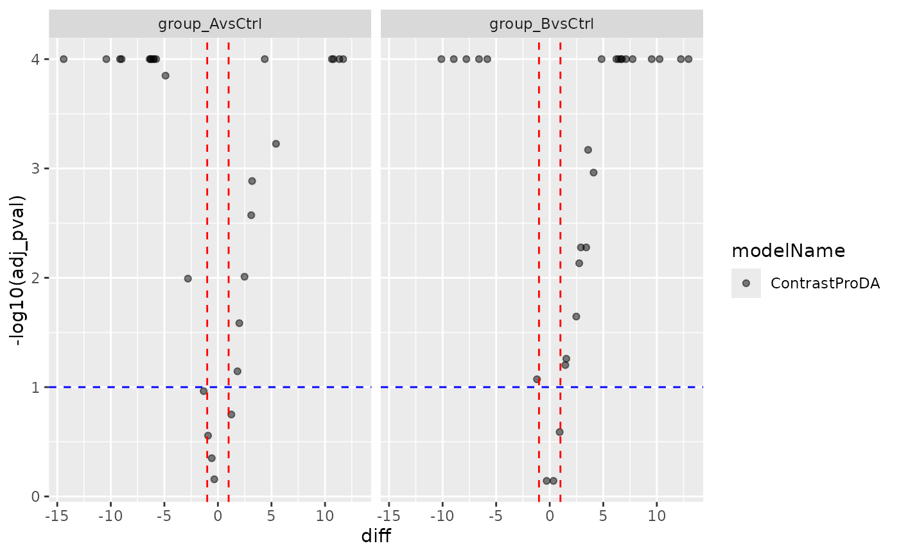

ContrastsProDA Wrapper to results produced by proDA
ContrastsProDA Wrapper to results produced by proDA
See also
Other modelling:
Contrasts,
ContrastsDEqMSFacade,
ContrastsFirth,
ContrastsFirthFacade,
ContrastsLMFacade,
ContrastsLMMissingFacade,
ContrastsLimma,
ContrastsLimmaFacade,
ContrastsLmerFacade,
ContrastsMissing,
ContrastsModerated,
ContrastsModeratedDEqMS,
ContrastsPlotter,
ContrastsROPECA,
ContrastsROPECAFacade,
ContrastsTable,
INTERNAL_FUNCTIONS_BY_FAMILY,
LR_test(),
Model,
ModelFirth,
ModelLimma,
build_contrast_analysis(),
build_model(),
build_model_glm_peptide(),
build_model_glm_protein(),
build_model_limma(),
build_model_logistf(),
contrasts_fisher_exact(),
get_anova_df(),
get_complete_model_fit(),
get_p_values_pbeta(),
group_label(),
isSingular_lm(),
linfct_all_possible_contrasts(),
linfct_factors_contrasts(),
linfct_from_model(),
linfct_matrix_contrasts(),
merge_contrasts_results(),
model_analyse(),
model_summary(),
moderated_p_deqms(),
moderated_p_deqms_long(),
moderated_p_limma(),
moderated_p_limma_long(),
my_contest(),
my_contrast(),
my_contrast_V1(),
my_contrast_V2(),
my_glht(),
pivot_model_contrasts_2_Wide(),
plot_lmer_peptide_predictions(),
sim_build_models_lm(),
sim_build_models_lmer(),
sim_build_models_logistf(),
sim_make_model_lm(),
sim_make_model_lmer(),
strategy_limma(),
strategy_logistf(),
summary_ROPECA_median_p.scaled()
Super class
prolfqua::ContrastsInterface -> ContrastsProDA
Public fields
contrast_resultcontrast result
modelNamemodel name
subject_Idcolumns with protein ID's
contrastsnamed vector of length 1.
Methods
Inherited methods
Method new()
initialize
Usage
ContrastsProDA$new(
contrastsdf,
contrasts,
subject_Id = "name",
modelName = "ContrastProDA"
)Method get_Plotter()
get ContrastsPlotter
Method to_wide()
convert to wide format
Usage
ContrastsProDA$to_wide(columns = c("t_statistic", "adj_pval"))Examples
istar <- prolfqua::sim_lfq_data_peptide_config()
#> creating sampleName from fileName column
#> completing cases
#> completing cases done
#> setup done
istar$config <- istar$config
istar_data <- istar$data
lfd <- LFQData$new(istar_data, istar$config)
se <- prolfqua::LFQDataToSummarizedExperiment(lfd)
#> Loading required namespace: SummarizedExperiment
if(require(proDA)){
fit <- proDA::proDA(se, design = ~ group_ - 1, data_is_log_transformed = TRUE)
contr <- list()
contrasts <- c("group_AvsCtrl" = "group_A - group_Ctrl",
"group_BvsCtrl" = "group_B - group_Ctrl")
contr[["group_AvsCtrl"]] <- data.frame(
contrast = "group_AvsCtrl",
proDA::test_diff(fit, contrast = "group_A - group_Ctrl"))
contr[["group_BvsCtrl"]] <- data.frame(
contrast = "group_BvsCtrl",
proDA::test_diff(fit, contrast = "group_B - group_Ctrl"))
bb <- dplyr::bind_rows(contr)
cproDA <- ContrastsProDA$new(bb, contrasts = contrasts, subject_Id = "name")
x <- cproDA$get_contrasts()
cproDA$get_linfct()
contsides <- cproDA$get_contrast_sides()
stopifnot(ncol(cproDA$to_wide()) == c(7))
tmp <- cproDA$get_Plotter()
tmp$volcano()$pval
tmp$volcano()$adj_pval
}
#> Loading required package: proDA
